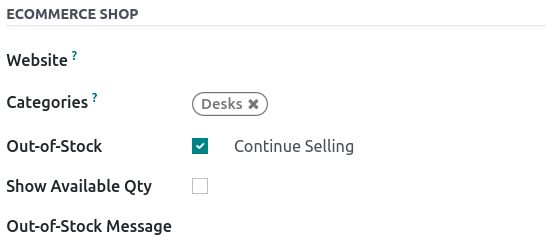

Catálogo¶
El catálogo de comercio electrónico es el equivalente a los estantes de una tienda física: permite que los clientes vean sus productos. Mostrar las categorías con claridad, las opciones disponibles, la clasificación y las opciones de navegación te ayudará a estructurarlo de forma eficiente.
Uso de categorías de productos¶
En Odoo, hay un modelo de categoría específico para su comercio elecrónico. Usar categorías para sus productos le permite añadir un menú de navegación en su página de comercio electrónico. Los visitantes pueden usarlo para ver todos los productos bajo la categoría que seleccionen.
Para hacerlo, vaya a , seleccione el producto que desea modificar, haga clic en la pestaña Ventas y seleccione las Categorías que desee en la tienda del comercio electrónico.
Nota
Un mismo producto puede aparecer en varias categorías de comercio electrónico.
Cuando establezca las categorías de sus productos, vaya a la página principal de la tienda y haga clic en . En la opción Categorías, puede habilitar un menú en la parte Izquierda, en la parte Superior, o en ambas. Si selecciona la categoría Izquierda, aparece la opción Contraer categoría recursiva que permite hacer que el menú de la categoría Izquierda se pueda contraer.

Ver también
Navegación¶
Usar categorías en el comercio electrónico le permite organizar y dividir sus productos. Sin embargo, si necesita un nivel adicional de categorización en su catálogo, puede activar filtros como atributos u ordenar por.
Atributos¶
Los atributos se refieren a características de un producto, como color o material, mientras que las variantes son las diferentes combinaciones de atributos. Puede encontrar los atributos y variantes en , seleccione un producto y abra la pestaña Atributos y variantes.
Ver también
Para activar el filtrado por atributos, vaya a la página principal de su tienda, haga clic en y seleccione Izquierda, Arriba, o ambas. Además, también puede activar el filtro por precios para activar los filtros de precios.
Nota
El filtro de precio no depende de los atributos, por lo tanto, puede activarse por sí solo si así lo desea.
Truco
Puede utilizar los filtros de atributos aunque no trabaje con variantes de productos. Cuando agregue atributos a sus productos, asegúrese de especificar solo un valor por atributo. Odoo no crea variantes si no hay combinación posible.
Ordenar por¶
Puede permitir que el usuario clasifique manualmente el catálogo gracias a la barra de búsqueda. Desde la página principal de la tienda, haga clic en ; puede activar o desactivar la opción Ordenar por así como el botón de diseño. También puede seleccionar la opción Clasificación predeterminada del botón Ordenar por. La clasificación predeterminada se aplica a todas las categorías.
Las opciones de clasificación son:
Destacado
Llegadas más recientes
Nombre (A-Z)
Precio - bajo a alto
Precio - alto a bajo
Además, puede editar manualmente el orden de un producto en el catálogo, solo debe ir a la página principal de la tienda y hacer clic en el producto. En la sección Producto de la sección Personalizar, puede reorganizar el orden haciendo clic en las flechas. << >> mueve el producto a la extrema derecha o a la izquierda, y < > mueve el producto una fila a la derecha o a la izquierda. También es posible cambiar el orden de los productos del catálogo en y arrastrando y soltando los productos dentro de la lista.

Diseño de la página¶
Página de categoría¶
Puede personalizar el diseño de la página de categorías utilizando el creador de sitios web.
Importante
La edición del diseño de la página de categoría es global; la edición del diseño de una categoría afecta a todas las páginas de categoría.
Para ello, vaya a la página . Aquí puede elegir el diseño, el número de columnas para mostrar los productos, etc. El botón descripción del producto hace que la descripción del producto sea visible desde la página de la categoría, debajo de la imagen del producto.

Truco
Puede elegir el tamaño de la tabla, pero tenga en cuenta que mostrar demasiados productos puede afectar el rendimiento y la velocidad de carga de la página.
Producto destacado¶
Puede destacar productos para hacerlos más visibles en la página de categoría o de producto. En la página de su elección, vaya a y haga clic en el producto a destacar. En la sección Producto, puede elegir el tamaño de la imagen del producto haciendo clic en la tabla, y también puede añadir una cinta o insignia. Esto muestra una cinta a través de la imagen del producto que dice:
Oferta
Agotado
Sin existencias
Nuevo
De otra manera, puede activar el modo de desarrollador en la plantilla del producto, y en la pestaña Ventas, cambiar o crear la cinta desde el campo Cinta.
Nota
El modo de desarrollador solo está pensado para usuarios experimentados que deseen tener acceso a herramientas avanzadas. El uso del modo de desarrollador no está recomendado para usuarios normales.
Funciones adicionales¶
Puede acceder y activar botones adicionales como añadir al carrito, lista comparativa o lista de deseos. Para ello, vaya a la página principal de la tienda y, al final de la categoría Página de productos, haga clic en los botones que desee utilizar. Los tres botones aparecen al pasar el ratón sobre la imagen de un producto.
Añadir al carrito: añade un botón para añadir el producto al carrito;
Lista de comparación: añade un botón para comparar productos según su precio, variante, etc;
Botón de lista de deseos: añade un botón para añadir un producto a una lista de deseos.


Agregar contenido¶
Puede utilizar bloques de creación para agregar contenido a la página de categoría, con una variedad de bloques que van desde Estructura a Contenido dinámico. Hay áreas específicas definidas para utilizar bloques y se resaltan en la página al arrastrar y soltar un bloque.

Si coloca un bloque de creación en la parte superior de la lista de productos, creará un nuevo encabezado de categoría específico para esa categoría.
Si coloca un bloque de creación en la parte superior o inferior de la página será visible en todas las páginas de categoría.
Truco
Añadir contenido a una página de categoría de comercio electrónico es beneficioso en términos de estrategia SEO. El uso de palabras clave vinculadas a los productos o a las categorías de comercio electrónico mejora el tráfico orgánico. Además, cada categoría tiene su propia URL específica a la que se puede apuntar y que es indexada por los motores de búsqueda.